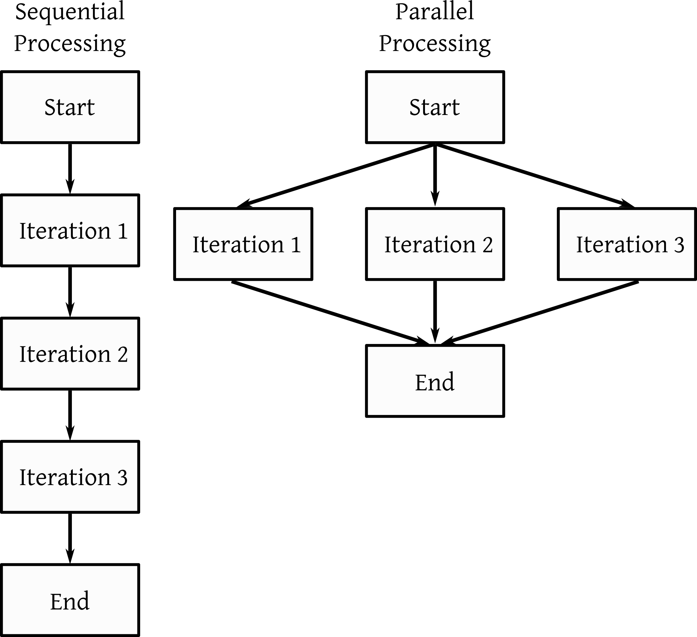

R Futures and Parallel Processing
David Gerard
2022-02-24
Learning Objectives
- Futures, batch jobs, parallel processing.
- Comprehensive Overview of Futures
{doFuture}Vignette{foreach}Vignette{furrr}Website
Motivation
Parallel computing is where you run many processes at the same time.
E.g., suppose I run this code to calculate the mean of a sample of 10 uniformly distributed observations.
nsamp <- 1000 nind <- 10 outvec <- rep(NA_real_, length.out = nsamp) for (i in seq_len(nsamp)) { outvec[[i]] <- mean(runif(nind)) }Each iteration does not depend on any other iteration, so we could potentially run each iteration independently and simultaneously.
This could potentially speed things up:

Parallel processing can be beneficial if
- You have independent iterations (though this can be relaxed in more complicated computations).
- Each iteration takes awhile (not a millionth of a second).
- You aren’t passing huge datasets around each iteration.
Sometimes, if you have a quick for-loop, the overhead of parallelization actually can slow things down. This is why parts 2 and 3 are important.
We will talk about a relatively new approach to parallel processing in R through the use of “futures”.
Future Overview
A future is a value that may be available at some point in the future. This value is the result of an (either evaluated or unevaluated) expression.
The
{future}package implements a nice future data structure built on top of environments.library(future)When you create a future, you create something that may eventually have a value.
When you use a future, you evaluate the expression, obtain that value, and use that value.
Futures can be evaluated sequentially or in parallel, on the same machine or on a distributed cluster of machines.
The idea of a future is that you can write the same R code for sequential single computer jobs, as well as for large parallel jobs on the supercomputer, and the R code will work in both scenarios. This is pretty awesome.
This is also great because different types of parallel processing sometimes require different types of code. Using a future means that you don’t need to worry about the parallel processing environment.
Example: Below, we do normal evaluation, binding
xto 10. This is evaluated right away, and so"Hello World"is printed.x <- { cat("Hello World\n") 10 }## Hello Worldx + 1## [1] 11Below, we create a future that is not evaluated right away, so
"Hello World"is not printed. It just can be evaluated at some point.x %<-% { cat("Hello World\n") 10 }When we use
x, then the future is evaluated, the expression runs, and “Hello World” is printed.x + 1## Hello World## [1] 11You can create futures using
%<-%, like I did above, but it is more common to use a the{future}package as a backend to a more familiar API.{furrr}: Using the{purrr}API.{foreach}: Uses a for-loop API.{future.apply}: Uses base R vectorization API (likeapply(),sapply(),vapply(), etc)
Evaluation Plans
You use
future::plan()to dtermine if a future will be evaluated sequentially or in parallel using a particular strategy.plan("sequential")is the default and basically just runs R like you normall would.
{foreach}
{furrr}
New Functions

This work is licensed under a Creative Commons Attribution-NonCommercial 4.0 International License.